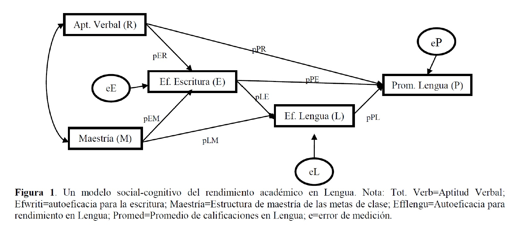
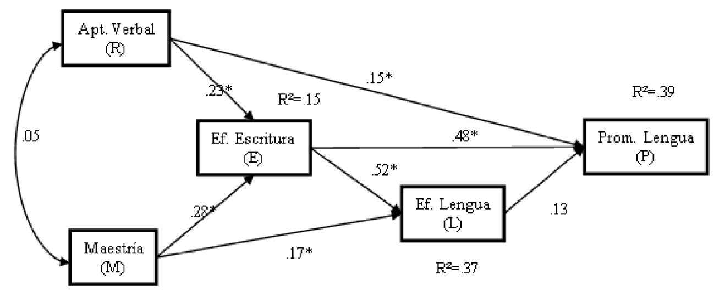

Introducción al Análisis de Senderos (Parte I)
Análisis Avanzado de Datos II
Gabriel Sotomayor
2025-06-16
Contenidos de esta Sesión
Análisis de Senderos (Parte I)
- Introducción: ¿Qué es y para qué sirve el Análisis de Senderos?
- Conceptos Básicos: Variables, diagramas y coeficientes.
- Descomposición de Efectos: Directos, indirectos y espurios.
- Supuestos Fundamentales del Análisis de Senderos.
1. Introducción al Análisis de Senderos (Path Analysis)
¿Qué es el Análisis de Senderos?
- El Análisis de Senderos (Path Analysis - PA) es una técnica estadística multivariada que permite evaluar el ajuste de un modelo teórico que propone una red de relaciones de dependencia (causales hipotetizadas) entre un conjunto de variables observadas.
- Importante: El PA no prueba la causalidad de forma definitiva, pero sí nos ayuda a:
- Determinar si un modelo causal propuesto es consistente con los datos.
- Comparar modelos causales alternativos.
- Identificar y cuantificar la fuerza de las diferentes “rutas” o “senderos” de influencia.
- Es una extensión del modelo de regresión múltiple, permitiendo examinar simultáneamente múltiples relaciones de dependencia, incluyendo la contribución directa e indirecta de las variables.
Origen y Evolución del Análisis de Senderos
- Orígenes: Desarrollado por el genetista Sewall Wright a principios del siglo XX para estudios filogenéticos y de herencia.
- Introducción a las Ciencias Sociales: Adoptado y popularizado gradualmente, especialmente a partir de la segunda mitad del siglo XX.
- Popularización: El surgimiento de software estadístico potente (especialmente para Modelos de Ecuaciones Estructurales - SEM) en la década de 1980 facilitó enormemente su aplicación.
- Uso Actual: Ampliamente utilizado en sociología, psicología, economía, ciencia política, educación, ecología y muchas otras disciplinas para modelar sistemas de relaciones.
Análisis de Senderos (PA) vs. Modelos de Ecuaciones Estructurales (SEM)
- El Análisis de Senderos es, conceptualmente, un caso especial de los Modelos de Ecuaciones Estructurales (SEM).
- Diferencia Clave:
- PA (Clásico): Trabaja exclusivamente con variables observadas (medidas directamente, ej. edad, ingreso reportado, respuestas a ítems de una escala).
- SEM (Completo): Puede incluir variables latentes (constructos no observados directamente, medidos a través de múltiples indicadores) y modelar explícitamente el error de medición de esos indicadores.
- Variables Observables y Error: Aunque las variables en PA se miden “directamente”, estas mediciones nunca son perfectas. Siempre contienen algún grado de error aleatorio o factores imprevisibles que no son el constructo puro.
Análisis de Senderos (PA) vs. Modelos de Ecuaciones Estructurales (SEM)
- Ventajas del SEM (con latentes): Permite estimar el impacto del error de medición y establecer la validez de constructo de las variables latentes de forma más rigurosa.
- Utilidad del PA: A pesar de las ventajas del SEM completo, el PA sigue siendo una herramienta muy útil y ampliamente utilizada, especialmente cuando:
- Las variables de interés son consideradas razonablemente bien medidas por indicadores únicos.
- Se quiere explorar o testear modelos causales relativamente sencillos sin la complejidad adicional de modelar variables latentes.
- Como un paso previo o simplificado antes de un SEM más complejo.
Funcionamiento y Propósitos del Análisis de Senderos
- Base en Regresión: El investigador especifica un modelo donde las variables pueden ser predictoras (independientes) de algunas variables y, a su vez, predichas (dependientes) por otras dentro del mismo sistema. Esencialmente, es un sistema de ecuaciones de regresión interconectadas.
- Evaluación del Ajuste del Modelo: El objetivo central del PA es determinar el grado en que el modelo teórico propuesto (la red de senderos) representa adecuadamente las relaciones (covarianzas/correlaciones) observadas en los datos.
- Identificación de Modelos Inadecuados: Permite detectar si un modelo hipotetizado se ajusta mal a la realidad empírica.
Funcionamiento y Propósitos del Análisis de Senderos
- Estimación de Efectos: Provee estimaciones de la magnitud (fuerza) y significancia estadística de cada relación (sendero) hipotetizada en el modelo.
- Representación Gráfica: Los modelos de senderos se representan visualmente mediante diagramas de senderos (path diagrams).
- Las variables se muestran (usualmente en cajas).
- Las relaciones hipotetizadas se representan con flechas.
- Se estiman coeficientes path para cada flecha, análogos a los coeficientes beta (estandarizados) de la regresión múltiple.
2. Conceptos Básicos del Análisis de Senderos
Diagrama de Senderos: Un Ejemplo Visual
Este diagrama representa un modelo teórico sobre el rendimiento académico en Lengua.

Convenciones Gráficas en el Análisis de Senderos
Los diagramas de senderos usan convenciones visuales estandarizadas:
- Variables Observadas: Se representan con cuadrados o rectángulos.
- Variables Latentes (si se incluyeran, más propio de SEM): Se representarían con círculos u óvalos. En PA puro, todas son observables.
- Relaciones Causales Hipotetizadas (Senderos):
- Flechas Unidireccionales (\(\longrightarrow\)): Indican una supuesta influencia directa de una variable sobre otra. La flecha va de la variable “causa” (predictora) a la variable “efecto” (predicha).
- Cada flecha tiene asociado un coeficiente path.
Convenciones Gráficas en el Análisis de Senderos
- Covariación No Analizada (Correlaciones entre Exógenas):
- Flechas Bidireccionales Curvas (\(\longleftrightarrow\)): Indican que dos variables exógenas covarían (están correlacionadas), pero no se hipotetiza una dirección causal entre ellas dentro del modelo.
- Términos de Error/Residuales:
- Se representan con flechas que apuntan a las variables endógenas, originándose “desde fuera” del modelo o desde un círculo (si se representa el error como variable latente). Indican la varianza no explicada.
Tipos de Variables en un Modelo de Senderos
- Variables Exógenas:
- Son aquellas variables cuyas causas NO están representadas en el modelo. No reciben flechas de otras variables dentro del modelo.
- Funcionan como los predictores iniciales o puntos de partida del sistema causal.
- En la Figura 1: Aptitud Verbal (R) y Maestría (M) son exógenas.
- Variables Endógenas:
- Son aquellas variables cuyas causas SÍ están representadas (al menos parcialmente) en el modelo. Reciben una o más flechas de otras variables (exógenas o endógenas).
- Pueden ser variables dependientes finales o variables mediadoras (intervinientes).
- En la Figura 1: Ef. Escritura (E), Ef. Lengua (L), y Prom. Lengua (P) son endógenas.
Coeficientes Path y Términos de Error
- Coeficientes Path (p o \(\beta\)):
- Son (usualmente) coeficientes de regresión estandarizados.
- Indican la magnitud y dirección del efecto directo de una variable predictora sobre una variable endógena, controlando por todas las demás variables que también predicen directamente a esa misma variable endógena.
- Se interpretan de forma similar a los Betas en regresión múltiple: “Por cada aumento de una desviación estándar en X, Y cambia en [valor del coeficiente path] desviaciones estándar, manteniendo constantes otras influencias sobre Y”.
- Términos de Error (o Perturbaciones, \(e\) o \(\zeta\)):
- Cada variable endógena tiene un término de error asociado.
- Representa la varianza de esa variable endógena que NO es explicada por los predictores incluidos en el modelo para ella.
- Incluye la influencia de variables omitidas, error de medición aleatorio, y cualquier otra fuente de variación no especificada.
- En la Figura 1: \(e_E, e_L, e_P\).
Aplicación Práctica: Modelo de Rendimiento en Lengua
Revisitemos el modelo de Pérez, Medrano y Ayllón (2010) sobre rendimiento académico.
- Variables Consideradas (todas observables en este PA):
- Aptitud Cognitiva Verbal (R)
- Creencias de Autoeficacia para la Escritura (E)
- Creencias de Autoeficacia para el Rendimiento en Lengua (L)
- Estructura de Metas de Aula de Maestría (M)
- Promedio de Calificaciones en Lengua (P) - Variable dependiente final.
- Relaciones Propuestas: El diagrama muestra las hipótesis sobre qué variable influye directa o indirectamente en otra.
Diagrama del Modelo de Rendimiento en Lengua
Este diagrama es la representación visual de la teoría que se va a testear.
Traducción a Ecuaciones Estructurales
Un modelo de senderos es matemáticamente un sistema de ecuaciones de regresión. Cada variable endógena tiene su propia ecuación.
El PA, como extensión de la regresión múltiple, asume linealidad y aditividad en las relaciones.
Para la Figura 1, las ecuaciones serían:
Prom. Lengua (P) = \(p_{PR} \cdot \text{Aptitud Verbal (R)}\) + \(p_{PE} \cdot \text{Ef. Escritura (E)}\) + \(p_{PL} \cdot \text{Ef. Lengua (L)}\) + \(e_P\)
Ef. Lengua (L) = \(p_{LE} \cdot \text{Ef. Escritura (E)}\) + \(p_{LM} \cdot \text{Maestría (M)}\) + \(e_L\)
Ef. Escritura (E) = \(p_{ER} \cdot \text{Aptitud Verbal (R)}\) + \(p_{EM} \cdot \text{Maestría (M)}\) + \(e_E\)
Los términos \(e_P, e_L, e_E\) son los residuos o errores de cada ecuación.
3. Descomposición de los Efectos Path
La Riqueza del PA: Descomponiendo Asociaciones
Una de las grandes fortalezas del Análisis de Senderos es su capacidad para descomponer la relación total entre dos variables en diferentes tipos de efectos:
- Efectos Directos: La influencia inmediata, no mediada, de una variable sobre otra. Representada por una flecha directa.
- Efectos Indirectos: La influencia de una variable sobre otra que ocurre a través de una o más variables mediadoras (o intervinientes).
- Efectos Totales: La suma de todos los efectos directos e indirectos de una variable sobre otra.
La Riqueza del PA: Descomponiendo Asociaciones
- Efectos Espurios y No Analizados (Correlaciones):
- Correlación Espuria: Parte de la correlación observada entre dos variables que se debe a que ambas son influenciadas por una causa común (o varias).
- Correlación No Analizada: Correlación entre variables exógenas, que el modelo toma como dada pero no intenta explicar.
Efectos Directos vs. Indirectos (Ejemplo Simple)
El PA nos ayuda a entender cómo una variable afecta a otra.
- Efecto Directo: Ingresos \(\longrightarrow\) Horas de Trabajo Doméstico
Aquí, los ingresos influyen directamente en las horas dedicadas al trabajo doméstico.
Efectos Directos vs. Indirectos (Ejemplo Simple)
- Efecto Indirecto: Ingresos \(\longrightarrow\) Contratación de Serv. Domést. \(\longrightarrow\) Horas de Trabajo Doméstico
Aquí, los ingresos influyen en la contratación de servicio doméstico, y ésta a su vez influye en las horas que la persona dedica al trabajo doméstico.
*Aquí, los ingresos influyen en la contratación de servicio doméstico, y ésta a su vez influye en las horas que la persona dedica al trabajo doméstico.*Estimación y Significación de los Efectos Path
- Coeficientes Path (Efectos Directos):
- Se estiman como coeficientes de regresión, usualmente estandarizados (Betas).
- Indican el cambio en DE en la variable dependiente por un cambio de una DE en la predictora, controlando otras predictoras de esa misma dependiente.
- Efectos Indirectos:
- Se calculan multiplicando los coeficientes path estandarizados a lo largo de un sendero mediado.
- Ejemplo (Figura 1): Efecto indirecto de Ef. Escritura (E) sobre Prom. Lengua (P) vía Ef. Lengua (L) = \(p_{EL} \times p_{LP}\). Si \(p_{EL}=0.52\) y \(p_{LP}=0.13\), el efecto indirecto es \(0.52 \times 0.13 = 0.0676\).
Estimación y Significación de los Efectos Path
- Efecto Total:
- Suma del efecto directo (si existe) y todos los efectos indirectos significativos entre dos variables.
- Significancia Estadística:
- Para los efectos directos, se obtiene de la salida de regresión (t-value o z-value, p-valor).
- Para efectos indirectos y totales, se pueden usar métodos como el bootstrapping o la prueba de Sobel para estimar su significancia (
lavaanlo puede hacer).
Ejemplo: Descomposición de Efectos (Diagrama con Coeficientes)

En este diagrama, los números en las flechas son coeficientes path estandarizados. Los \(R^2\) indican la varianza explicada de las variables endógenas.Interpretando los Senderos:
- Efecto Directo:
- De Metas de Maestría sobre Autoeficacia en Escritura es 0.28.
- Efectos Indirectos (Ejemplos hacia Rendimiento en Lengua):
- El efecto de Metas de Maestría sobre Rendimiento en Lengua, mediado por Autoeficacia en Escritura y luego por Autoeficacia en Lengua, se calcula: \(0.28 \times 0.52 \times 0.13 \approx 0.019\).
- El efecto de Metas de Maestría sobre Rendimiento en Lengua, mediado solo por Autoeficacia en Lengua, es: \(0.17 \times 0.13 \approx 0.022\).
- ¡Y hay más posibles efectos indirectos y totales que se pueden calcular!
Actividad 1: De la Teoría al Diagrama de Senderos
Instrucción: Lean cada uno de los siguientes escenarios teóricos. Para cada uno, identifiquen las variables clave y dibujen un diagrama de senderos que represente las relaciones causales hipotetizadas.
Se postula que la esperanza de vida de las personas se ve disminuida por su consumo de drogas. A su vez, la probabilidad de que una persona consuma drogas está inversamente relacionada con su nivel de ingresos. Finalmente, se considera que un mayor nivel de ingresos tiene un efecto positivo directo sobre la esperanza de vida.
Se teoriza que la calidad del ambiente en el hogar influye positivamente en el desarrollo cognitivo infantil. Este desarrollo cognitivo, a su vez, mejora el rendimiento escolar. Además, la calidad del ambiente en el hogar también fomenta un mejor desarrollo emocional infantil. Un adecuado desarrollo emocional incrementa la autoeficacia del niño o niña, y esta autoeficacia tiene un impacto positivo en el rendimiento escolar. Por otra parte, se sabe que el ingreso del hogar puede afectar tanto el rendimiento escolar directamente, como la propia calidad del ambiente en el hogar.
Un modelo sobre acción colectiva sugiere que la clase social de un individuo influye en su participación en protestas, pero este efecto no es directo, sino que opera a través de tres mecanismos distintos. Primero, la clase social moldea la percepción de tener una identidad agraviada. Esta percepción, a su vez, incrementa la tendencia a realizar una justificación exogrupal del agravio (es decir, atribuir la causa del agravio a un grupo externo). Finalmente, esta justificación aumenta la participación en protestas. Un segundo mecanismo es que la clase social afecta la percepción sobre la eficacia de las protestas, y una mayor percepción de eficacia lleva a mayor participación en protestas. El tercer mecanismo postula que la clase social influye en la legitimidad que se atribuye a las protestas, y una mayor percepción de legitimidad también incrementa la participación en protestas.
4. Supuestos del Análisis de Senderos
Supuestos Clave del Path Analysis
El PA es una extensión de la regresión múltiple; por lo tanto, muchos supuestos son similares, más algunos específicos del modelo:
- Correcta Especificación del Modelo:
- Teoría Sólida: El modelo debe estar bien fundamentado teóricamente.
- Variables Incluidas: Todas las variables relevantes deben estar en el modelo. La omisión de variables importantes puede sesgar los resultados.
- Direccionalidad: Las flechas causales deben tener justificación teórica.
- Exploración y Limpieza de Datos:
- Valores Extremos (Outliers): Detectar y tratar outliers univariados (puntajes Z) y multivariados (Distancia de Mahalanobis, \(D^2\)). Pueden distorsionar gravemente las estimaciones.
- Valores Perdidos (Missing Data): Evaluar cantidad y patrón. Considerar métodos de imputación si son numerosos o no aleatorios.
Supuestos Clave del Path Analysis
- Tamaño de la Muestra:
- No hay reglas fijas, pero se recomienda:
- Mínimo 10-20 casos por parámetro libre a estimar en el modelo.
- Un N total de al menos 200 observaciones es una guía general para obtener estimaciones estables. Modelos más complejos requieren N mayores.
- No hay reglas fijas, pero se recomienda:
- Independencia de los Errores (Residuales):
- El término de error de cada variable endógena NO debe estar correlacionado con las variables exógenas que la predicen.
- Los términos de error de diferentes variables endógenas NO deben estar correlacionados entre sí (a menos que se especifique teóricamente dicha correlación en el modelo, lo cual es posible en
lavaan).
Supuestos Clave del Path Analysis
- Normalidad (para estimación ML y tests de significancia estándar):
- Idealmente, las variables (o los residuos de las ecuaciones) deberían seguir una distribución normal multivariada.
- Evaluar asimetría y curtosis univariada, y tests de normalidad multivariada (ej. Mardia).
- Si hay no-normalidad severa, considerar estimadores robustos (ej. DWLS en
lavaansi se usan datos ordinales, o bootstrap).
Supuestos Clave del Path Analysis
- Linealidad y Aditividad:
- Se asume que las relaciones entre las variables son lineales. Si se sospechan relaciones no lineales, se deben modelar explícitamente (ej. términos cuadráticos) o usar otras técnicas.
- Se asume que los efectos son aditivos (no se modelan interacciones por defecto, aunque pueden incluirse).
- Baja Multicolinealidad:
- Las variables exógenas (o predictores de una misma endógena) no deben estar excesivamente correlacionadas entre sí (ej. |r| > 0.80 o 0.85). Dificulta la estimación de efectos únicos y puede inflar errores estándar.
Supuestos Clave del Path Analysis
- Recursividad (Modelo Estándar):
- Las influencias causales son unidireccionales (no hay flechas que vuelvan sobre sí mismas directa o indirectamente, formando “loops” o ciclos).
- Los modelos no recursivos (con feedback loops) son posibles pero más complejos de estimar e identificar.
- Nivel de Medición:
- Idealmente intervalar o de razón para estimadores como ML u OLS.
- Variables ordinales pueden usarse si se tratan como continuas (con suficientes categorías y distribuciones no muy problemáticas) o, más apropiadamente, con estimadores diseñados para datos categóricos (ej. DWLS en
lavaan).
- Confiabilidad de las Medidas:
- Se asume que las variables observadas miden sus respectivos conceptos de manera confiable (con bajo error de medición aleatorio). El PA clásico no modela explícitamente el error de medición (a diferencia de SEM con variables latentes).